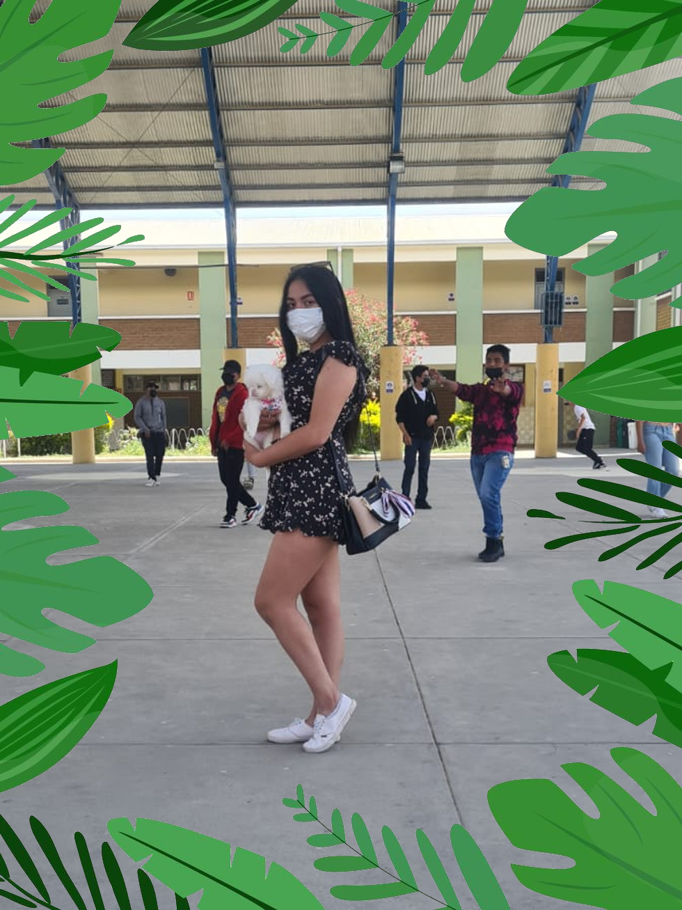
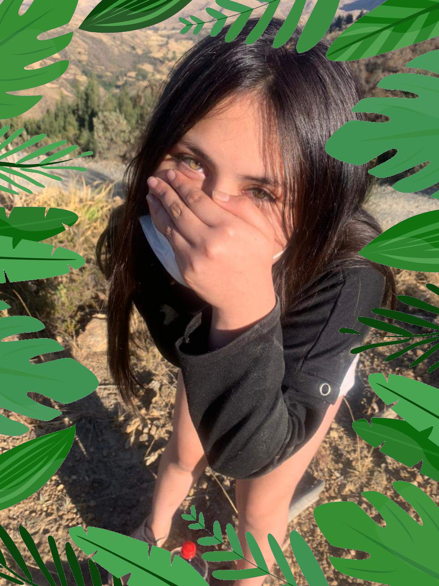
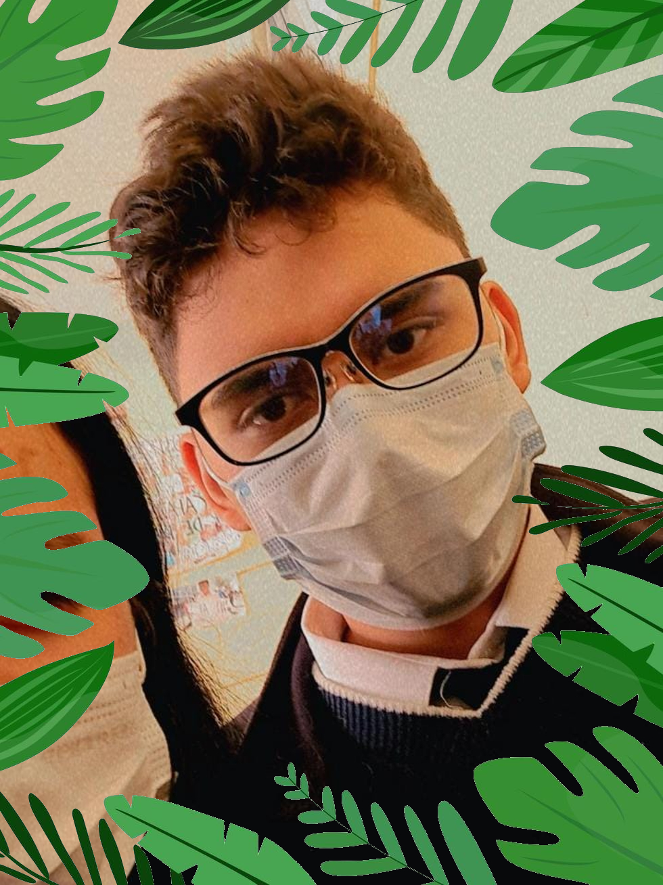

autores

Mi vida comenzó cuando salí del vientre de mi madre, un 14 de julio de 2005 en cbba, Bolivia. Mis padres decidieron llamarme Angheli Jhasnmin Gonzales Garcia. Desde pequeña siempre me gustó ser un poco extrovertida y sociable. Camila es mi amiga mas cercana ingresamos al colegio al mismo tiempo , actualmente llevamos 7 años de esta amistad tan bonita. Cuando culmine este periodo de mi vida pretendo ser médico , pues me gustaria ayudar a la gente .

Mi nombre es Camila Diana Vargas Garcia, tengo 17 años de edad, nací en la ciudad de Madrid el 1 de junio de 2006, en este momento vivo en el barrio buenos aires con mi madre , y mis hermanos;actualmente curso el grado 5to de sec rojo en la institución Educativa Eugenia Ravasco. En seis años cumplí con el periodo de educación primaria, desde el 2011 hasta el 2017. Posteriormente, pasé a estudiar la educación media en el 2018, nivel que aún me encuentro cursando y dentro de un año me gradúo así que espero con ansias esa fecha.
